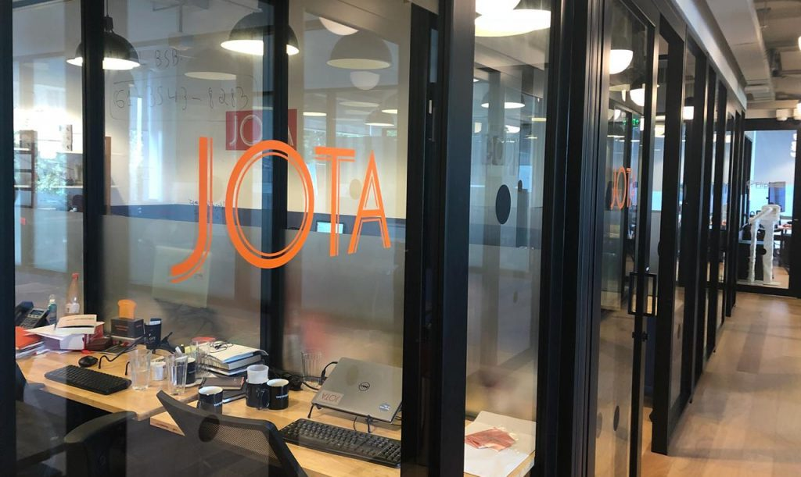

JOTA cria banco de talentos para repórteres freelancers em todo o Brasil
Objetivo é aumentar o número e a diversidade de colaboradores do site.
O JOTA lança nesta terça-feira (22/6) um banco de talentos permanente para receber cadastros de repórteres freelancers em todo o país.
